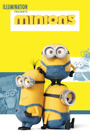
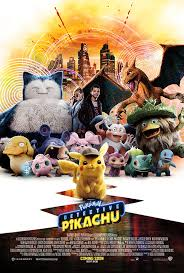

Marely and Me
Inception is a cinematic masterpiece that explores the concept of dreams within dreams. Dom Cobb, a skilled thief, specializes in extracting secrets from the subconscious during sleep. When offered a chance to erase his criminal record, he must plant an idea instead of stealing one—a process called inception. The film's stunning visuals, layered narrative, and Hans Zimmer’s unforgettable score make it a thrilling experience. As reality and dreams blur, viewers are drawn into a world where time, memory, and identity collide. Christopher Nolan’s direction keeps audiences questioning what’s real until the very last frame.

The rise of Guru
Interstellar tells the story of a near-future Earth plagued by environmental disasters. Cooper, a former NASA pilot, joins a mission through a wormhole to find a habitable planet for humanity. The film dives into themes of time, gravity, and love, creating a deeply emotional and scientific journey. With stunning visuals, theoretical physics, and breathtaking moments in space, it captivates both the heart and the mind. Christopher Nolan blends human drama with cosmic scale, while Hans Zimmer’s haunting score adds depth to every scene. It’s a journey beyond stars, anchored by human hope and connection.

The Detective Pikachu
The Dark Knight redefined superhero cinema with its gritty realism and complex characters. Batman faces off against the Joker, a chaotic villain who tests the limits of Gotham’s justice. As the city falls into fear, Bruce Wayne must make tough moral choices. The film’s depth lies not only in action, but in its philosophical battles between order and chaos. Heath Ledger’s Oscar-winning performance as the Joker is chilling and iconic. Christopher Nolan’s direction, paired with Hans Zimmer’s powerful score, delivers suspense, emotion, and unforgettable moments. It’s more than a superhero film—it’s a crime saga with heart.